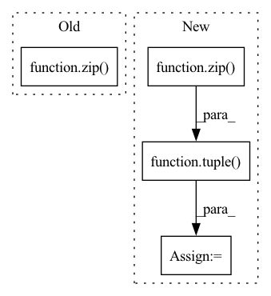

Pattern ID :30206
Before Change
)
// run request tensors through all requested modules, update caches
for backend, backend_cache_handles, prompt in zip( requested_backends, cache_handles, prompts) :
if not is_dummy(prompt):
hidden_states[:, : prompt.shape[1]] += prompt
if hidden_states.numel() == 0:After Change
type="inference",
)
inference_infos = tuple(
InferenceMetadata(uid, prefix_length, tuple( handles) )
for uid, handles in zip( requested_uids, cache_handles)
)
if hidden_states.numel() == 0:
pass // user passed a tensor with 0 tokens. This is a special case that occurs, e.g.In pattern: SUPERPATTERN
Frequency: 4
Non-data size: 4
Instances Fragment ID: 89658569
Project Name: bigscience-workshop/petals
Commit Name: c4938bc23efe22e3ab6d638261bfd56c6ad807a9
Time: 2023-01-19
Author: justheuristic@gmail.com
File Name: src/petals/server/handler.py
M Class Name: TransformerConnectionHandler
N Class Name: TransformerConnectionHandler
M Method Name: rpc_inference(3)
N Method Name: rpc_inference(3)
M Parent Class: ConnectionHandler
N Parent Class: ConnectionHandler
M File Name: src/petals/server/handler.py
N File Name: src/petals/server/handler.py
M Start Line: 113
M End Line: 189
N Start Line: 109
N End Line: 183
Before Change
if len(batch_nodes) == 0 :continue
orders.extend([order_dict[n] for n in batch_nodes])
batch_index.append(list(map(lambda n: self.mapper[n], batch_nodes)))
batch_data = tuple(zip( self.batch_features, self.batch_adj, batch_index) )
batch_data = self._to_tensor(batch_data)
logit = []After Change
batch_mask.append(mini_mask)
orders.append([order_dict[n] for n in batch_nodes])
batch_data = tuple(zip( batch_features, batch_adj, batch_mask) )
logit = np.zeros((index.size, self.n_classes), dtype="float32")
with self.device:
batch_data = self._to_tensor(batch_data) Fragment ID: 89658572
Project Name: edisonleeeee/graphgallery
Commit Name: 6d453bba5f625a27587472fe0496f5456b8a767b
Time: 2020-03-15
Author: cnljt@outlook.com
File Name: nn/models/clustergcn.py
M Class Name: ClusterGCN
N Class Name: ClusterGCN
M Method Name: predict(2)
N Method Name: predict(2)
M Parent Class: SupervisedModel
N Parent Class: SupervisedModel
M File Name: nn/models/clustergcn.py
N File Name: nn/models/clustergcn.py
M Start Line: 77
M End Line: 99
N Start Line: 77
N End Line: 102
Before Change
batch_index.append(list(map(lambda n: self.mapper[n], batch_nodes)))
batch_labels.append(self.labels[batch_nodes])
batch_data = tuple(zip( self.batch_features, self.batch_adj, batch_index) )
with self.device:
sequence = ClusterMiniBatchSequence(batch_data, batch_labels)
return sequenceAfter Change
batch_mask.append(mini_mask)
batch_labels.append(mini_labels)
batch_data = tuple(zip( batch_features, batch_adj, batch_mask) )
with self.device:
sequence = ClusterMiniBatchSequence(batch_data, batch_labels)
return sequence
Fragment ID: 89658574
Project Name: edisonleeeee/graphgallery
Commit Name: 6d453bba5f625a27587472fe0496f5456b8a767b
Time: 2020-03-15
Author: cnljt@outlook.com
File Name: nn/models/clustergcn.py
M Class Name: ClusterGCN
N Class Name: ClusterGCN
M Method Name: train_sequence(2)
N Method Name: train_sequence(2)
M Parent Class: SupervisedModel
N Parent Class: SupervisedModel
M File Name: nn/models/clustergcn.py
N File Name: nn/models/clustergcn.py
M Start Line: 102
M End Line: 113
N Start Line: 106
N End Line: 122